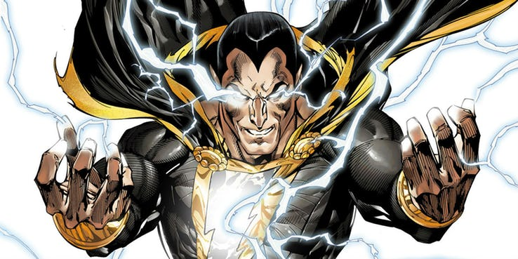

Poderes Adão negro
Adão Negro recebe as qualidades de vários deuses egípcios por dizer o nome do mago Shazam. Shu (resistência), Hershef (força), Amon (poder), Zonga (Tote) (sabedoria), Anpu (velocidade), e Menthu (coragem). Atualmente, deriva seus poderes de: Shu (resistência), Heru (Hórus) (velocidade), Amon (força), Zehuti (Tote) (sabedoria), Aton (poder), e Mehen (coragem).
Os incríveis poderes à disposição de Adão Negro são vastos, além de poder manipular magia, algo que, diretamente, o Shazam não pode fazer. Por pronunciar a palavra "Shazam!", ele pode conjurar um relâmpago mágico a fim de mudar de Theo Adam para Adão Negro e vice-versa. Este relâmpago não lhe causa dano, embora oponentes que estejam no raio de ação do mesmo possam ser feridos. Adão pode desafiar a gravidade e literalmente voar. A Sabedoria de Zonga se reflete na forma de conselhos que Adam ouve dentro de sua mente. Este aspecto também permite traduzir línguas perdidas, como hieróglifos. A força de Amon permite erguer pesos dantescos de muitas toneladas, e destruir materiais extremamente resistentes. O vigor de Shu concede a invulnerabilidade ao corpo do vilão, e uma tremenda resistência a venenos e a capacidade de poder sobreviver ao vácuo do espaço. A coragem de Mehem permite a ele encarar os piores vilões e perigos imaginados sem medo. A Velocidade de Heru permite-lhe correr a grande velocidade, fazer ações rapidamente e enxergar o mundo como se estivesse em câmera lenta, permitindo que ele possa pegar projéteis de alta velocidade como balas. Algumas histórias sugerem que o poder de Shazam também concede incrível longevidade, uma vez que Adam já havia permanecido vivo durante centenas de anos no antigo Egito. Voltar a sua forma original nessa hipótese o mataria, uma vez que sua forma mortal envelhece normalmente. É digno de nota que Adão Negro já mencionou ter audição e olfato ampliados.
